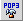
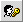
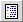

| Term/Icon |
Name/Alternate Text |
Action It Performs |
 | Back to Previous | Takes you back to the previous folder. |
 | Edit E-mail Address | Edits the e-mail address information. |
 |
Edit Stationary
|
Takes you to the area where you can edit your stationery. Stationery is preset message text for e-mail replies.
|

|
POP3 setup
|
Configure external POP servers to retrieve email from into
your account.
|
|
Spam Assassin user preferences (not shown) |
Set up your spam filter to automatically discard or file spam email.
|

|
Change password
|
Create a new password.
|
|
 | View History | Displays the History of your OpenWebMail activity. |
 | About | Displays server and OpenWebMail information. |